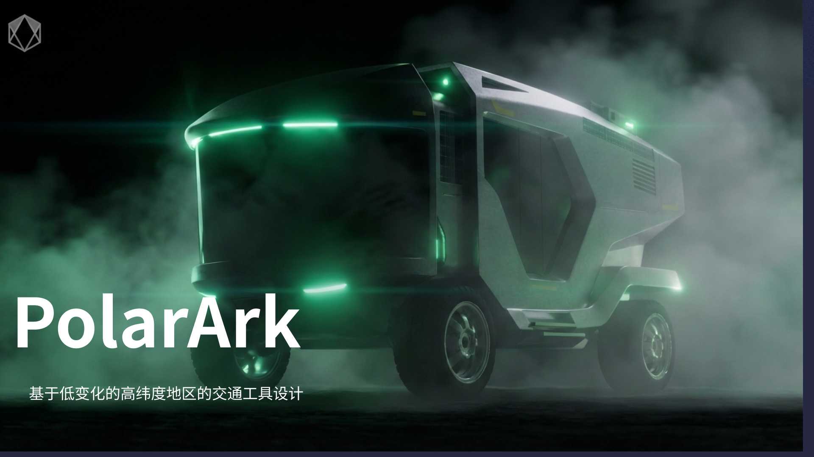
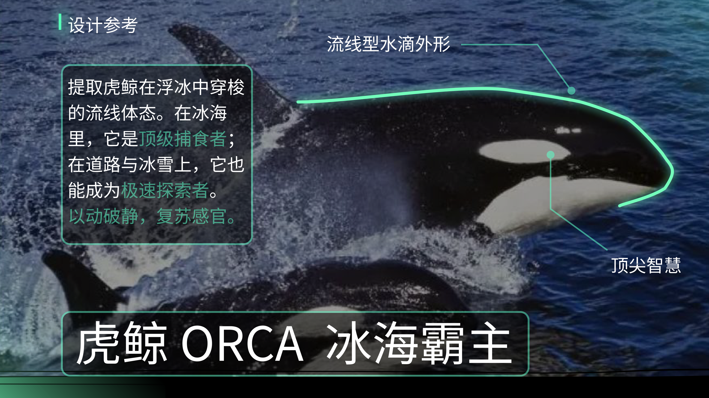
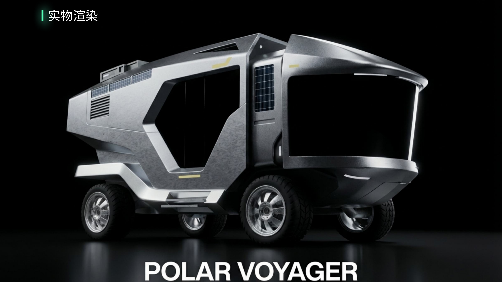
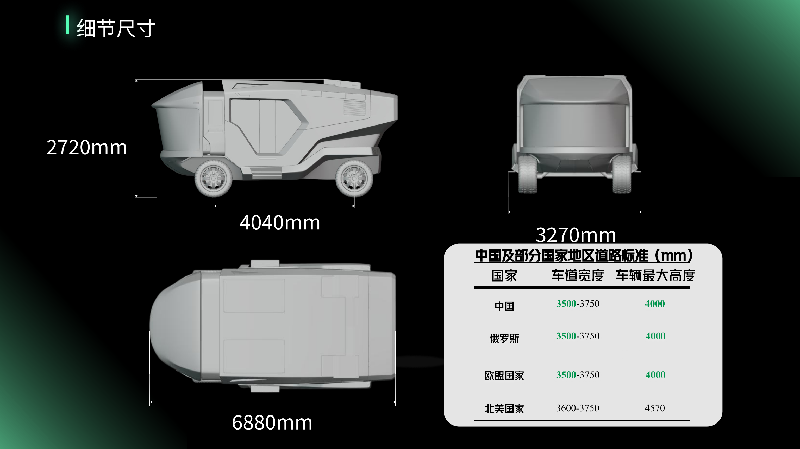
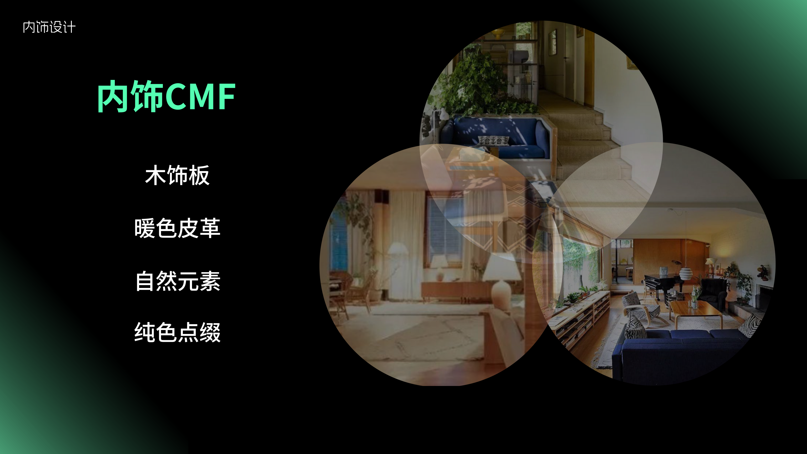
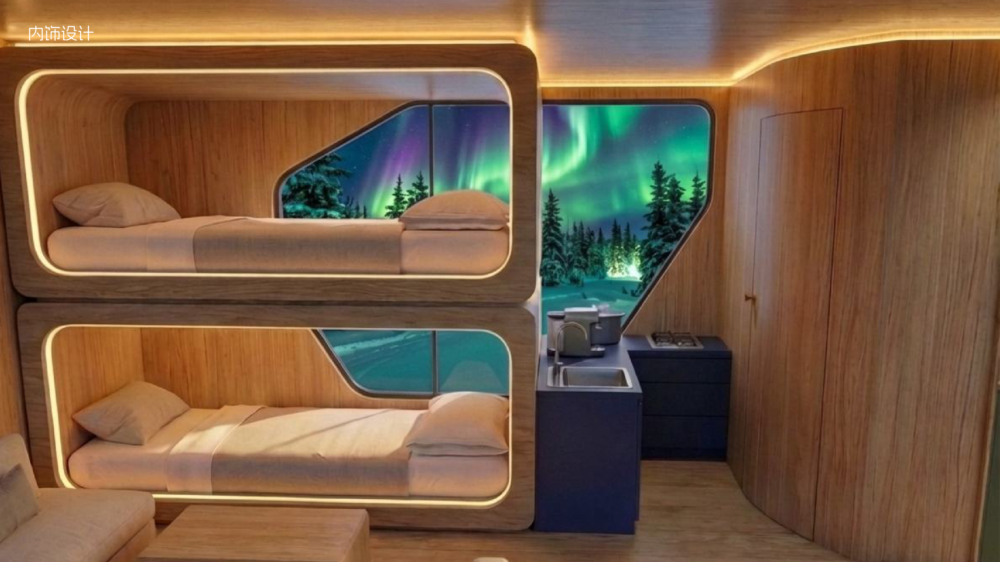
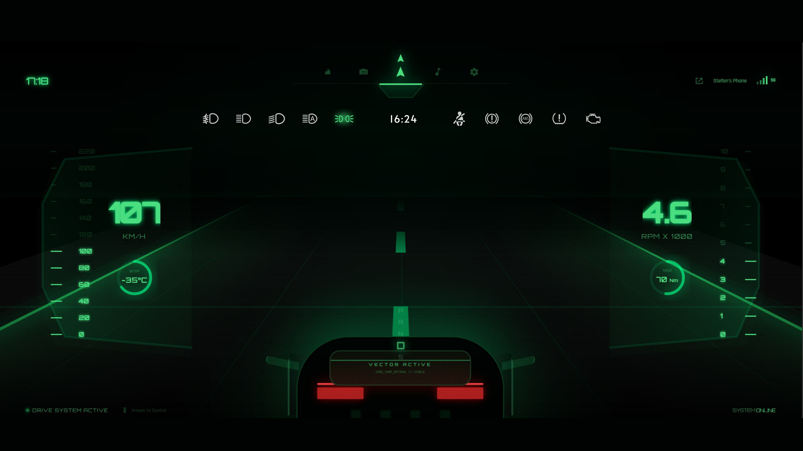
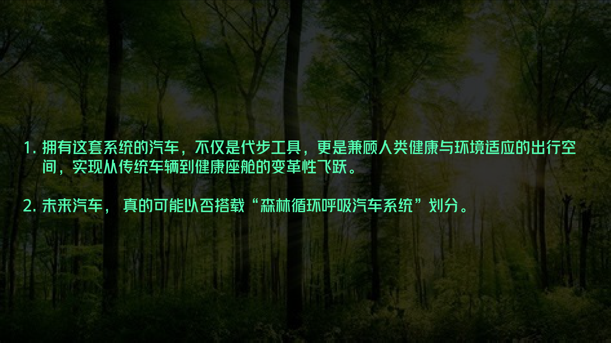

00 / OVERVIEW
PolarArk
极地车全流程设计
以“低变化高纬度地区”为场景，从背景调研、用户痛点、外饰造型、内饰体验、健康座舱系统到 HMI 交互原型，构建一套可长期停留的移动生活系统。

01 / BACKGROUND RESEARCH
问题从“低变化环境”开始。
高纬度地区的极夜、弱日照、低纹理景观与单调声环境，会让人长期处于低唤醒状态。调研结论不是简单“想出去玩”，而是需要补偿光照、视觉与听觉刺激。

02 / USER JOURNEY
出行本身，正在变成消耗。
用户旅程显示：固定生活半径、公共交通班次少、换乘等待、住宿成本高，让“出行”变成高度目的导向的任务，而不是恢复感与社交体验的来源。

03 / DESIGN STRATEGY
把交通工具，
变成可运行的生活系统。
设计目标被重新定义为：扩大生活半径、允许极端气候下长期停留，并通过环境输入补偿建立刺激锚点。它不是单纯的车，而是“移动 + 居住 + 环境补偿 + 社交 / 独处切换”的系统。

04 / EXTERIOR CONCEPT
外饰从虎鲸与冰海中提取力量感。
外饰参考虎鲸的流线体态与冰海穿梭感：以动破静，用庞大体量、锐利前脸、灰白 CMF 与高识别灯带，回应“安全、力量、温暖、融入环境”的外饰需求。

05 / EXTERIOR OUTPUT
从形态迭代到车辆规格。
外饰阶段完成了造型迭代、AI 渲染、建模渲染与尺寸校核。车身比例、离地姿态、灯带和轮组共同强化“极地探索者”的可靠感与存在感。


06 / INTERIOR EXPERIENCE
内饰从 Survival 转向 Living。
内饰不是“把车做得更豪华”，而是在极端环境里给用户一个可恢复的生活容器。CMF 采用木饰板、暖色皮革、自然元素与纯色点缀，让空间从生存舱转向可以长期停留的居住舱。


07 / HEALTH CABIN SYSTEM
森林循环呼吸，
是内饰体验的系统核心。
内饰系统进一步拆为照明、声音、空气、温湿度、氧气与负氧离子等模块：用森林灯光模拟、自然白噪音、空气净化、微压氧舱和温湿度调节来补偿外部环境的单调与压迫。
08 / HMI ARCHITECTURE
HMI 是驾驶员的“第三只眼”。
HMI 系统架构整合车辆检测、无人机控制、中控台、生态舱与通信模块。无人机负责探索周边 5-10 公里未知地形，车辆状态、室内环境、通信与避障系统被组织到同一套核心层中。

09 / HMI PROTOTYPE
从系统架构，
落到可交互界面。
最终 HMI 原型聚焦车辆状态、地形风险、室内环境、无人机侦察、通信与任务报告。点击进入独立页面，可以实际测试底部导航、驾驶模式、卫星链路和报告发送等交互。

进入 HMI 演示 ↗10 / REFLECTION
最终目标不是造一辆车，
而是搭建一种移动生活方式。
这套系统把出行、停留、环境补偿与交互控制连成闭环：车辆不只是代步工具，而是兼顾健康、环境适应与情绪恢复的出行空间。
